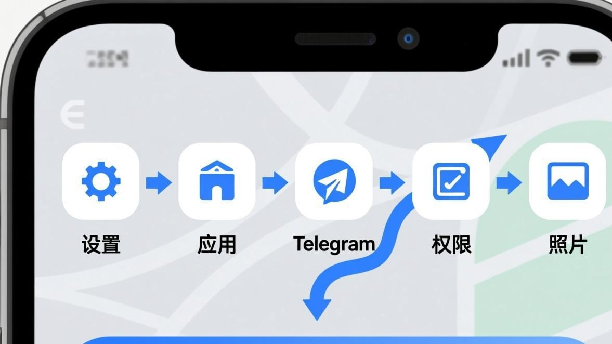
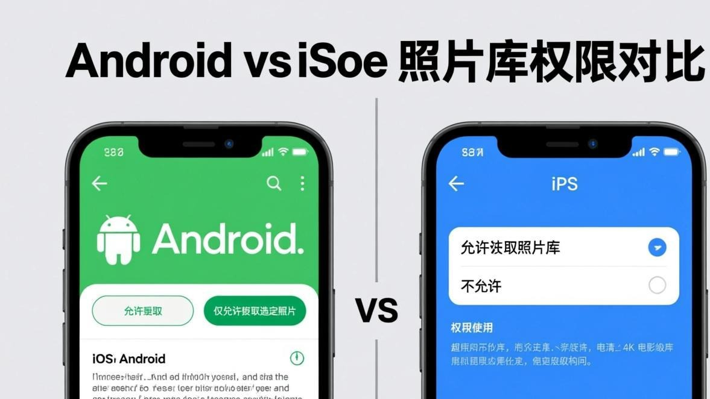

昨天我妈拿她手机过来找我，说她的Telegram不知道咋了，想发张图片给我爸，结果一点那个图片按钮，就弹出个提示说"Telegram无法访问您的相册"，然后就没法选图片了。她跟我说这个问题弄得她都不会发图片了，只能用摄像头现场拍。
我拿过来一看，还真是——权限被关了。不过我也顺带发现，Android和iOS设置权限的位置不太一样，我妈那个是iPhone，我帮她找到设置里改了一下就好了。后来我想想，这问题应该挺常见的，特别是有些人可能不小心把权限关了，自己还不知道（如果你遇到的是图片一直转圈加载不出来的问题，那是另一回事），所以我把Android和iOS的设置方法都写下来，你要是也遇到这问题，对着教程做应该就能搞定。

先说说这问题到底是啥情况
就是你在Telegram里想发图片（点那个图片按钮或者"回形针"图标），结果弹出来一个提示，说Telegram想要访问你的相册/照片，然后你如果点了"不允许"或者"拒绝"，之后再想发图片就不行了。
还有一种情况是，以前能发图片，但突然就不行了（如果是图片完全不显示，可能原因又不一样）。这种时候可能是你（或者你手机上别的什么应用）不小心把Telegram的权限给关了，也可能是手机系统更新之后权限被重置了。我遇到过后一种情况——手机系统更新完，好多应用的权限都被关了，Telegram的相册权限也在其中。
Android手机：打开Telegram的相册权限
Android手机的界面因为品牌不同可能有点差异（小米、华为、OPPO、vivo这些的界面都不太一样），但基本思路是一样的：去"设置"里找到"应用管理"，然后在里面找到Telegram，把"存储"或者"相册"权限打开。

下面我以"原生Android"（就是最接近原生系统的那种）为例写步骤，如果你手机界面不太一样，基本思路是一样的，你可以摸索一下，或者搜一下"[你的手机品牌] 应用权限设置"。
步骤 1
打开你手机的"设置"应用（就是那个齿轮图标）
步骤 2
往下滑，找到"应用"或者"应用管理"（不同手机可能叫法不一样）
步骤 3
在应用列表里找到Telegram（可以点右上角的搜索按钮直接搜"Telegram"）
步骤 4
点进去之后，找到"权限"这个选项，点进去
步骤 5
在权限列表里找到"存储"或者"文件和媒体"（有些手机可能叫"存储空间"）
步骤 6
把那个开关打开（通常是从"拒绝"改成"允许"或者从关变成开）
步骤 7
有些Android系统还会细分为"仅在使用中允许"、"仅限媒体文件"、"完全允许"之类的选项，选"完全允许"或者"仅限媒体文件"就行
步骤 8
设置完之后，重新打开Telegram试试能不能发图片了
小米手机用户注意：
小米手机的权限设置稍微特殊一点。除了上面说的"应用管理"里的权限，小米还有一个"授权管理"（在"安全中心"或者"手机管家"里），有时候即使你在系统设置里开了权限，小米自己的"授权管理"里可能还是关着的。如果你按上面的步骤开了权限还是不行，可以试试打开小米的"手机管家"，找到"权限管理"，然后给Telegram打开"存储"权限。
华为手机用户注意：
华为手机（特别是新版的EMUI或者HarmonyOS）的权限管理在"设置 -> 应用和服务 -> 权限管理"里。找到Telegram之后，把"存储"权限打开。还有一个坑：华为手机有时候会有一个"后台弹窗"或者"后台活动"的权限，虽然这个和相册权限不直接相关，但如果你发现Telegram在后台的时候没法自动保存图片，可以检查一下这个权限。
iPhone用户：打开Telegram的照片权限
iPhone的设置相对统一一点，因为iOS的系统比较封闭，所有iPhone的设置界面都是一样的。这个比较友好，你照着下面的步骤做基本就能搞定。
不过iPhone的权限有几个选项要注意一下——iOS会问你要不要给Telegram访问"所有照片"还是"仅选中的照片"。如果你选了"仅选中的照片"，那Telegram只能看到你手动选中的那几张照片，其他的都看不到。如果你想要Telegram能访问你相册里的所有照片，要选"所有照片"。
步骤 1
打开iPhone的"设置"应用（那个齿轮图标）
步骤 2
往下滑，找到Telegram（在设置列表里，应用是按字母顺序排列的，Telegram应该在比较靠下的位置）
步骤 3
点进去之后，找到"照片"这个选项，点进去
步骤 4
你会看到几个选项："永不"、"仅选中的照片"、"所有照片"
步骤 5
选"所有照片"（这样Telegram就能访问你相册里的所有图片了）
步骤 6
如果你不想让Telegram访问所有照片，可以选"仅选中的照片"，然后手动选择你要让Telegram访问哪些照片
步骤 7
设置完之后，按Home键或者滑回去，重新打开Telegram试试
如果你选了"仅选中的照片"，但后来想加更多照片：
没关系，你可以随时回去改。还是在"设置 -> Telegram -> 照片"里，选"仅选中的照片"之后，下面会有一个"选择照片"的按钮，点进去就能加选更多的照片。或者你也可以直接改成"所有照片"，这样就不用每次都手动选了。
如果开了权限还是不行，试试这几个方法
有时候你明明把权限打开了，但Telegram还是说没法访问相册，这种时候可能是以下几种情况：
第一，Telegram没"刷新"权限状态。有些时候你明明在系统设置里把权限打开了，但Telegram还不知道，因为它在启动的时候就检查了权限，你是在它启动之后才改的权限。这种时候你把Telegram完全关掉（从后台也划掉），然后重新打开就好了。
第二，iOS的"照片"权限有时候会有延迟。我遇到过一次，就是我在iOS的设置里把Telegram的照片权限打开了，但打开Telegram之后它还是说没权限。后来我等了大概一两分钟，再重新打开Telegram就好了。估计是iOS的权限同步有延迟。
第三，有些Android手机有"自动拒绝"功能。比如你把Telegram的权限关了之后，下次Telegram要请求权限的时候，手机会自动拒绝（因为觉得你之前就拒绝过）。这种时候你要去手机的"应用管理"里手动把权限打开，不能等Telegram自己弹窗请求权限。
步骤 1
把Telegram完全关掉（从后台也划掉）
步骤 2
等个10秒再重新打开Telegram
步骤 3
如果还是不行，试试重启一下手机
步骤 4
如果还是不行，检查一下是不是手机系统版本太老了（有些老版本系统可能有bug）
步骤 5
实在不行的话，可以试试卸载重装Telegram（不过这个是最后手段了）
说一下怎么让Telegram能自动保存收到的图片
除了发图片需要相册权限之外，如果你想要Telegram自动把收到的图片保存到相册里，也是需要权限的。另外如果你在电脑上用Telegram也遇到了图片问题，可以看看桌面版图片问题解决方法。而且这个还需要在Telegram里面设置一个选项。
在Telegram里，点菜单按钮 -> 设置 -> 聊天设置（Chat Settings）-> "保存已收到的媒体"（Save Incoming Media），把这个选项打开。然后Android和iOS都会自动把收到的图片保存到相册里。
不过这个功能会比较耗存储空间，因为如果你加了很多群，群里每天都有很多图片，那你的相册很快就会满了。所以你可以选择性地打开——比如只对你"已保存的消息"或者某些特定的人/群打开自动保存，其他的就不自动保存。
我妈的那个问题最后是怎么搞定的
说回我妈的那个问题——她的是iPhone，我帮她去"设置 -> Telegram -> 照片"里看了一下，发现确实选的是"永不"。我给她改成了"所有照片"，然后重新打开Telegram，就能发图片了。
不过我还发现一个问题：她之前不知道怎么在Telegram里把"保存已收到的媒体"也给关了，所以她收到的图片都不会自动存到相册里。我顺便帮她打开了，这样以后她收到我爸发的照片就能自动存到相册里了，不用每次都手动保存。
说实话，我妈这种属于典型的"不知道自己点了什么"的情况。有时候我们点手机的时候会不小心点到一些选项，自己也不知道点了啥，结果后来就出问题了。如果你也遇到莫名其妙的问题，可以先想想最近有没有不小心点到什么，或者有没有更新过系统、装过新应用之类的，这些都可能影响到权限设置。
常见问题
好了，关于Telegram无法访问相册的问题，我能想到的所有情况和解决方法都写在这里了。这个问题其实不算复杂，就是找到权限设置的地方然后把开关打开就好了，但如果你不知道在哪里设置，就会觉得很麻烦。
希望我妈遇到的那个问题你没遇到，但如果遇到了，对着上面的步骤做应该就能搞定。如果还有什么疑问，可以去图片加载异常修复首页找找有没有你的问题，或者直接联系我们，我们会尽量帮你看看。
📱 立即下载 Telegram 最新版
更新到最新版本可修复大部分图片加载问题，官方正版安全无捆绑。